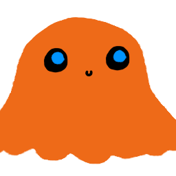
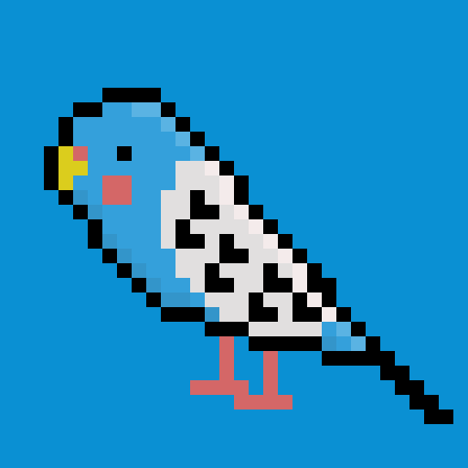
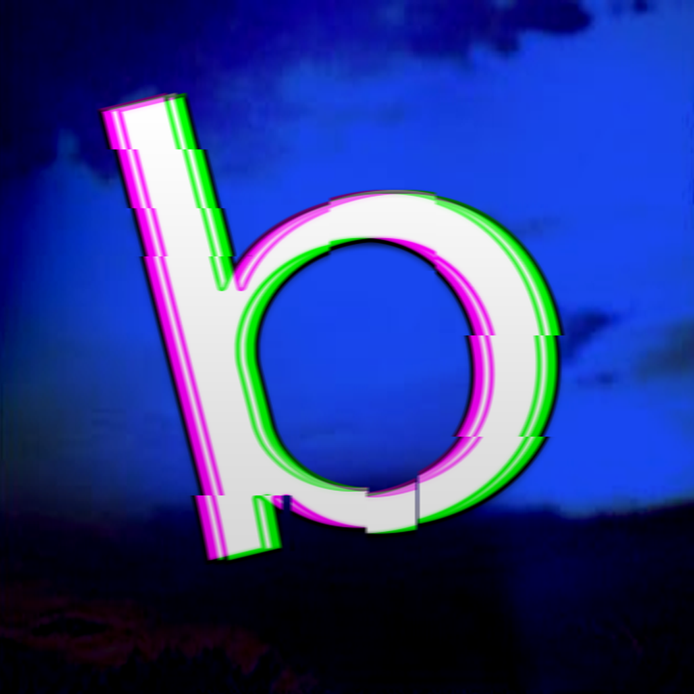

Decent Salad Games
Decent Salad Games
Aywer
Programmer, Audio Producer
Game developer with passion for making various games. Along with my friend I made Giant Enemy Spider - dynamic First Person Shooter where you’re locked inside an abandoned factory to face a gigantic spider.

Paczek
Programmer, DevOps, IT
I'm a programmer mostly interested in gamedev, but I like to tinker with other stuff from time to time. If you'd like to find out more about me I encourage you to visit my website (linked above).

Kasztan21
Game Designer, 3D Artist, Art Director
I'm a game designer that also happened to be an artist. I have various interests and I'm very employable. Please hire me plz plz plz plz.

Bigbar
Key Art Artist, Video Artist, Support
Just a guy who loves video games and random nerd stuff. I help the team with basic 3D models, fresh ideas, branding and sound effects.Also making sure everyone stays sane during development and trying to keep everyone's mental health above 1 HP
Fan Content Policy (Last updated: 22.03.2026)
LICENSE
We grant a limited, non-exclusive, revocable permission to create, use, and share content based on our game (“Fan Content”), subject to compliance with this policy.
This permission is granted at our sole discretion and may be modified or revoked at any time, for any reason, including with respect to specific individuals, projects, or uses. Upon revocation, you must cease use and distribution of the affected Fan Content.
This permission does not grant any ownership rights and should not be relied upon as permanent or guaranteed.
We reserve the right to determine what constitutes acceptable use and to request removal or restriction of any Fan Content.
Fan Content must not be represented as official or endorsed by us.
GUIDELINES
The following guidelines are provided to help you understand the kinds of fan content we generally view positively.
These guidelines are not legally binding, do not grant any rights, and do not limit our ability to take action under this policy. Compliance with these guidelines does not guarantee that any Fan Content is permitted.
We encourage:
- Fan Content that reflects creativity and respect for the game (specific guidelines forthcoming)
We discourage:
- Fan Content that may misrepresent the game or its creators (specific guidelines forthcoming)